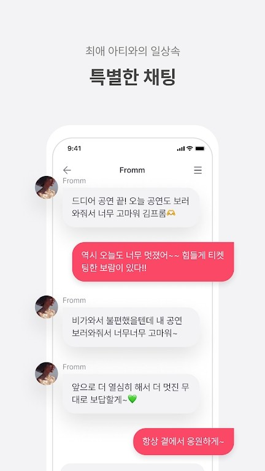

fromm 是什么？一份关于韩国偶像粉丝私信 App 的快问快答
fromm 是 Knowmerce 推出的韩国偶像粉丝订阅聊天平台。整理 8 个用户最常问的问题：它是什么、谁适合用、怎么订阅、双平台差异、退费规则、纪念日复原、要不要开会员、值不值得长期追。
整理一篇关于 fromm 的快问快答。这是一款韩国 Knowmerce 公司做的偶像粉丝订阅 App，主打和韩国偶像一对一私信聊天。国内用的人不算多，资料也零散，直接从帮助中心的官方文档里挑了最常被问的问题出来。
fromm 到底是什么？和 Vlive、Weverse 有什么区别？
一句话：fromm官网把它定义为付费私信聊天平台。你花钱订阅某位偶像，就能进专属聊天室和她对话，她会真的回你消息——不是录好的群发，是逐条看、逐条回的那种。
和 Vlive（已关停）、Weverse 最大的不同是交互密度。Weverse 更像偶像发动态粉丝评论的广场，fromm 是一对一私域。你发一条消息，偶像那边能看到、能回复、能叫你名字。当然这不代表每条都会回，但至少产品设计上就是奔着"每次对话都是专属"去的。
目前 fromm 上活跃的艺人以韩国女爱豆为主，覆盖 SM、FNC、IST 等主流厂牌，也有少数 solo 和演员。App 内支持韩语、英语、简体中文，自带翻译功能。
谁需要用 fromm？普通人装了能干什么？
最核心的用户画像就是韩国偶像的重度粉丝——尤其是那种"想离偶像更近一步"的。普通路人装了其实用不上，因为 fromm 的全部核心功能都围绕订阅展开，免费账户只能看艺人列表，没法聊天、没法看消息。
装了之后能干嘛：
- 订阅艺人后进独立聊天室，看她发的日常消息、语音、照片、短视频
- 1:1 发消息，偶像可能回复你（回复字数随订阅天数递增，前 49 天最多 50 字，500 天以上放开到 500 字）
- 纪念日系统——从你订阅第一天开始计数，App 上会显示"你和 XX 在一起第 N 天"
- fromm Plus+ 专属内容（付费会员区）和海峡 Channel（会员专属频道）
- 自带翻译，偶像发韩语你直接看中文
简单说：你追的爱豆在 fromm 上活跃、你愿意每个月花几十块跟她私聊——那就去下载一个试试。否则没必要。
怎么订阅？首次订阅有什么要注意的？
打开 App，首页就是艺人列表，每位艺人卡片上有头像、艺名、订阅价格（韩币）、上一条消息时间。点进去看主页，确认是你想追的那位，然后选档位。
fromm 的订阅档位按周期分：1 个月（约 5000 韩元）、3 个月（约 14000 韩元）、6 个月（约 27000 韩元）、12 个月（约 48000 韩元）。也支持多艺人捆绑，最多 8 位一组，长期追多位的话捆绑划算很多。
订阅券有两种：App 内购的普通券（Google Play / App Store 直接扣）和 fromm store 网站的 BFF 券。第一次用建议直接 App 内买普通券，流程最简单，10 秒内搞定。BFF 券优惠更多但要跳转到外部网站结算，支持微信支付（国内用户友好），流程稍复杂。

支付方式方面：Google Play / App Store 内购用对应商店的余额或绑定卡；fromm store 支持信用卡、PayPal、微信支付、虚拟账户汇款（韩国用户）。国内用户如果用没有 Google Play 服务的国产 Android 手机，直接改用微信小程序版本就行，功能覆盖差不多，不用绕 Google 那套。
Android 和 iOS 版本有什么差异？该用哪个？
核心功能完全一致——艺人阵容、订阅体系、聊天逻辑、纪念日、翻译、fromm Plus+、海峡 Channel 全都同步。Knowmerce 同时维护两个平台，版本更新节奏也基本同步（当前版本都在 1.50.x）。
差异主要在细节上：
媒体保存位置不同。Android 用户的文件系统开放，fromm 下载的图片、语音、短视频都能在 DCIM/Pictures/fromm 文件夹或文件管理器里直接找到、复制、备份、二次编辑。iOS 受沙盒限制，图片存照片 App、语音存文件 App，导出要多一步 AirDrop 或分享菜单。
通知后台策略不同。iOS 由系统统一管理后台推送，基本不会杀通知；Android 特别是国产 ROM（小米、华为、OPPO 等）普遍主动杀后台，fromm 的 FCM 推送会失效，需要手动给 App 解锁后台权限，或者干脆换微信小程序。
内购升级规则不同。iOS 用户如果想升级订阅档位，旧订阅会先按剩余时长退费、然后新订阅激活，中间要等 2-3 天处理期。Android 没有这个等待，新旧直接并行购买。
结论：哪个平台顺手用哪个，体验没差别。国内 Android 用户如果没 GMS，直接上微信小程序。
退费了还能重新注册吗？退费流程是怎样的？
fromm 帮助中心对这个问题给了明确答案：可以，用同一个账户 ID 重新买 membership 就行——退费不会拉黑或冻结账户，退完账还是那个账，只是会员权益暂时没了。
退费分两种情况要搞清楚：
订阅券退费（普通券 / BFF 券）：订阅到期自动停的话不用退费；中途想退要从 Google Play / App Store 报告问题（48 小时内容易退）或 fromm store 客服入口申请，退款按日比例算已使用部分加 10% 取消费。
membership 退费：从 App 内「我的 → membership 状态 → 申请退费」或 store 客服入口提交，需要提供账户 ID、订单号、退费原因。审核周期 3-5 个工作日，退款原路返回（信用卡 3-7 天、PayPal 1-2 天），会员权益在审核通过后立即失效。
退完 membership 之后，海峡 Channel 的会员标识消失、BFF 券不再享受会员折扣（已买的不受影响）、专属表情贴纸本地还能用。订阅券、聊天室、纪念日这些独立功能都不受影响。
订阅中断了，纪念日还能找回来吗？
有机会，但条件非常苛刻——订阅到期后 24 小时内必须重新订阅，超过一分钟都不行。我特意去fromm文档核对过，这个窗口卡得很死。
复原操作步骤：
- 24 小时内重新订阅同一个艺人（不是换一个）
- 准备好信息：你的账户 ID、艺人名字、第一次订阅日期、这次断档的到期日期、重新订阅日期、断档原因（银行卡扣费失败、忘记续费这类"迫不得已"的说法）
- 通过 App 内客服入口、store 网站 Support 链接或邮件 fromm_support@wonderwall.kr 提交申请（建议用韩语或英语）
客服人工审核 1-3 个工作日出结果。常见拒因：超过 24 小时窗口、断档原因看起来像"故意不续"、信息填得对不上。审核通过的话，纪念日天数恢复，同时回复字数上限也跟着恢复到对应的阶梯。审核不通过就是清零，没第二次机会。
只能恢复纪念日，不能复原聊天记录——帮助中心特意强调这一点，别抱侥幸。
最靠谱的办法还是一开始就开自动续费：确保扣费渠道有足够余额，订阅到期前 3-5 天手动续上最保险。多个艺人分别设置到期提醒，别全堆同一天。
membership 会员要不要开？和普通订阅有什么区别？
membership 是 fromm 除了艺人订阅之外的全局会员体系，独立于每一位艺人的订阅。简单说：订阅是"和某个偶像聊天"，membership 是"解锁更多专属福利"。
membership 给的东西主要有：海峡 Channel（会员专属频道，类似偶像圈的私域广场）、BFF 券折扣（买 BFF 订阅券更便宜）、专属表情贴纸、fromm Plus+ 付费内容访问、以及一些活动优先权。
适合开 membership 的场景：
- 同时追多位艺人，BFF 券折扣能省不少
- 想混海峡 Channel 那个圈子，看会员专属内容
- 长期用 fromm、对专属贴纸和活动有需求
只是想订阅一两位艺人聊天的话，不需要特意开 membership——单独订阅就够了，核心聊天功能 membership 和普通订阅完全一样。
长期追 fromm 有什么坑要提前知道？
三个最容易踩的：
一是自动续费必须手动关闭。订阅成功后自动开续费，忘关就一直扣。iOS 用户去「设置 → Apple ID → 订阅」里关；Android 去 Google Play 订阅管理里关。别以为到期了自己会停，fromm 不会。
二是 iOS 升级订阅有 2-3 天空窗期。旧订阅退费处理期间新订阅还没激活，你可能会出现"聊天室进不去、消息发不了"的断档。Android 没这个问题，想升级直接买。
三是 24 小时纪念日窗口卡死。银行卡突然没钱扣费失败、自己忘了手动续上——只要超过 24 小时才补救，之前攒了几百天的纪念日就清零了。别靠"到时候再说"，提前设置提醒。
还有个小细节：fromm 账户不支持注销后重开，换号可以但旧号的订阅记录、聊天内容、纪念日都带不走。订阅前想清楚用哪个手机号注册。
最后一句：fromm 值得装——前提是你追的偶像真在上面活跃、你能接受每月几十到上百的持续投入，而且别踩自动续费和纪念日那两个坑。否则就是浪费时间。